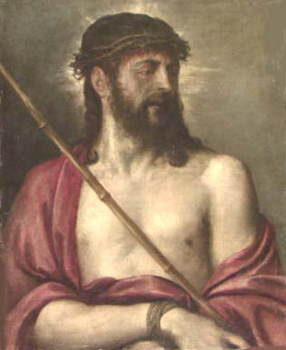
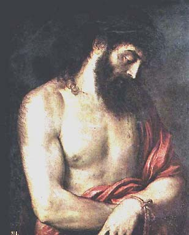
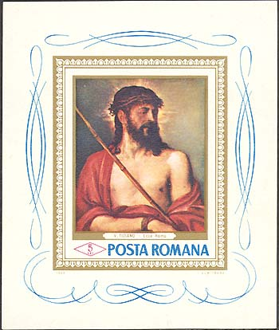

|
The National Brukenthal Museum in Sibiu Ecce Homo, by Titian |
Titian (1477?-1576), the greatest 16th-century
Venetian painter and the shaper of the Venetian coloristic and painterly
tradition. He is one of the key figures in the history of Western art. A pupil
of Bellini and an early follower of Giorgione, Tiziano Vercellio, better known
as
Titian, was the
most gifted High Renaissance painter in Venice and as such was a worthy rival
of Raphael and Michelangelo. Among his most admired early works is Sacred
and Profane Love (1515?, Galleria Borghese, Rome), an allegorical picture
in which two women, one nude (Sacred Love) and the other fully clothed
(Profane Love), are seated opposite each other in a serene manner reminiscent
of Giorgione's mysterious world. The Assumption of the Virgin
(1516-1518), a huge oil painting for the main altar of Santa Maria dei Frari
in Venice, is one of Titian's masterpieces. The figure of the Virgin is
depicted soaring above the apostles and moving toward God the Father, shown in
the curved top of the painting. Warm tones, such as vivid reds and golden
yellows, dominate. Titian also excelled in treating classical subjects, as
exemplified by Bacchus and Ariadne (1520-1523, National Gallery,
London) and Worship of Venus (1518-1519, Prado, Madrid), both executed
for the duke of Ferrara.
Titian is back at the
Brukenthal Museum with his work "Ecce Homo" (oil/canvas, 65,5 x 53 cm, inv.
1196). It is of notoriety that this work was stolen from the museum in 1968,
together with other seven works of exceptional value.
The painting, representing one of the most successful images of Christ,
stresses the virile resoluteness of the Martyr’s features and his austere
dignity.

The work was acquired and registered in the oldest manuscript catalogue of the Brukenthal Gallery ("Älteste handschriftliche Katalog", nr. 12), as a painting of the Italian School. It was registered then, as work belonging to Titian, in the catalogue of 1844 ("Die Gemäldegalerie des Freiherrlichen Baron von Brukenthalischen Museums, Hermannstadt", nr. 111). It was again mentioned as Italian Anonymous in the catalogues of 1893 ("Freiherr Samuel von Brukenthal’sches Museum in Hermannstadt, Führer durch die Gemäldegalerie", Hermannstadt, nr. 12) and 1901 (Michael Csaki, "Führer durch die Gemäldegalerie", Hermannstadt, nr. 1154). Michael Csaki, the curator of the Brukenthal Museum was the one that ascribed "Ecce Homo" to the "School of Titian", in his catalogue of 1909. It is important to know the fact that when conceiving this catalogue Michael Csaki took the advice of three remarkable personalities of the history of arts: Dr. A. Bredius from Hague, Dr. Hofstede van Groot from Amsterdam and Dr. Karl Voll from Munich. At the end of the 19th century they visited the Brukenthal Gallery, studied its patrimony and expressed very interesting opinions (some of them are still valid) regarding the identity of the authors of all the European painting schools of the Brukenthal collection. Under these circumstances "Ecce Homo" was ascribed to the school of Titian.
|
 |
 |
Around 1955, Theodor Ionescu, the chief curator of the Brukenthal Arts Gallery - who resumed the investigations of an important part of the European artistic patrimony at Sibiu, with the support of prestigious personalities of European art history -focused again the problem of ascribing "Ecce Homo", proving with strong arguments the belonging of this work to the creation of the Renaissance Venetian titan Titian. For this sensational attribution Thedor Ionescu asked for the opinion of the distinguished art historians Roberto Longhi and Emma Zocca. Roberto Longhi (cf. correspondence with Italy, 1958) accepted this attribution with no reserves and asked the Romanian specialist to publish the work in the art review "Paragone" (Theodor Ionescu, "Paragone", nr. 129, 1960). Emma Zocca also expressed her opinion regarding our painting (cf. correspondence with Italy, 1961) and offered new data regarding the subject of the work, about Titian’s approach of this subject in three paintings, almost identical in structure, but, chronologically far from each other.

The first work "Ecce Homo" (at Prado) was painted for the Emperor Charles V and the second (at the Museum Condé, Chantilly) was executed at the request of the artist’s friend, Aretino, as a replica to the original. Emma Zocca considered "Ecce Homo" of the Brukenthal collection as a late creation of the artist. She also stressed the vigor of the artist in re-elaborating a composition identically defined many years before. (After: http://www.verena.ro/brukenthal/"
The stamps shown above were issued on March 28, 1968, in a set of six stamps and a souvenir sheet. They were dedicated to great paintings in Romanian museums. Please point on them with the mouse index for more information..
| Published:
07/14/2002. Revised:
07/29/02. Copyright © 2002 by Victor Manta, Switzerland. All rights reserved worldwide. |